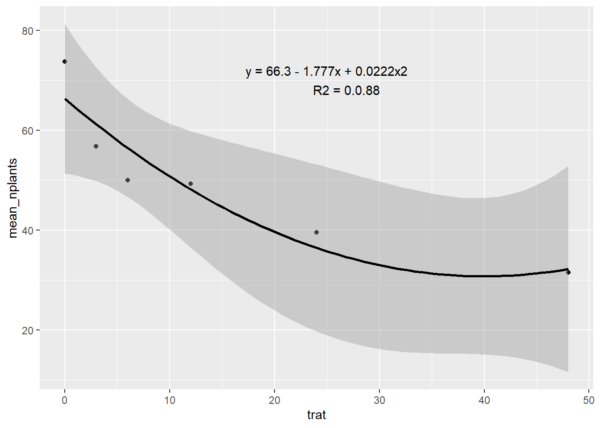
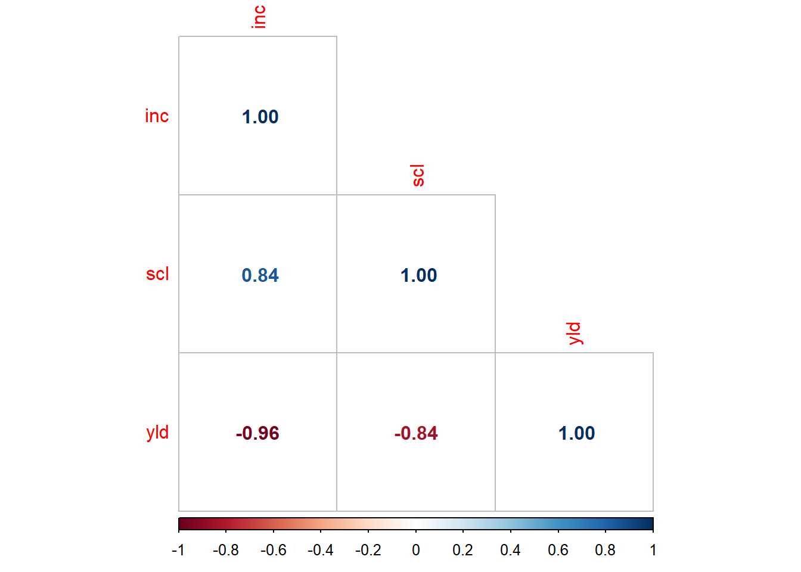

A análise de correlação é usada para avaliar a força e a direção da relação entre duas variáveis contínuas. Ela mede o grau de associação linear entre as variáveis, ou seja, o quanto as variáveis se movem juntas em uma relação linear. A medida mais comum de correlação é o coeficiente de correlação de Pearson, que varia de -1 a +1. Um valor próximo de +1 indica uma forte correlação positiva, um valor próximo de -1 indica uma forte correlação negativa, e um valor próximo de zero indica uma correlação fraca ou inexistente. A análise de correlação não implica causalidade, apenas indica a presença e a intensidade da relação linear entre as variáveis.
Carregando Pacotes:
library(tidyverse)
Warning: package 'ggplot2' was built under R version 4.2.3
── Attaching core tidyverse packages ──────────────────────── tidyverse 2.0.0 ──
✔ dplyr 1.1.0 ✔ readr 2.1.4
✔ forcats 1.0.0 ✔ stringr 1.5.0
✔ ggplot2 3.4.2 ✔ tibble 3.1.8
✔ lubridate 1.9.2 ✔ tidyr 1.3.0
✔ purrr 1.0.1
── Conflicts ────────────────────────────────────────── tidyverse_conflicts() ──
✖ dplyr::filter() masks stats::filter()
✖ dplyr::lag() masks stats::lag()
ℹ Use the conflicted package (<http://conflicted.r-lib.org/>) to force all conflicts to become errors
`geom_smooth()` using method = 'loess' and formula = 'y ~ x'
Ajustando modelo linear simples e quadratico:
Utiliza-se a função lm() para ajustar o modelo linear. Essa função recebe a fórmula do modelo e os dados como argumentos. A fórmula especifica a relação entre a variável dependente e a variável independente. Por exemplo, se sua variável dependente for “y” e sua variável independente for “x”, a fórmula seria y ~ x. A função lm() retornará um objeto do tipo “lm” que representa o modelo ajustado. Usa-se a função summary() para obter uma visão geral dos resultados do modelo ajustado. Isso inclui os coeficientes estimados, estatísticas de ajuste (como o coeficiente de determinação R²), valores-p e outros diagnósticos do modelo.
Ver qual que se adapta melhor.
Filtrar o experimento 2: O group_by vai agrupar pelos tratamentos e o summarise vai dar a média do número de plantas. Se eu quiser seguir a linha em cima dos pontos eu posso colocar o argumento span = 0.7 dentro da função geom_smooth. O R ao quadrado da regressão linear simples é o coeficiente de determinação.
estande2 <- estande |>filter(exp ==2) |>group_by(trat) |>summarise(mean_nplants =mean(nplants))estande2|>ggplot(aes(trat, mean_nplants))+geom_point()+#geom_line()geom_smooth(formula = y ~poly(x, 2), method ="lm", color ="black")+annotate(geom ="text", x =25, y =70,label ="y = 66.3 - 1.777x + 0.0222x2 R2 = 0.0.88")

Olhando o ajuste do modelo quadrático:
Para ajustar os dados a um modelo linear quadrático, basta utilizar a função lm(). A diferença é que precisará adicionar a variável independente ao quadrado na fórmula do modelo. Por exemplo, se sua variável dependente for “y” e sua variável independente for “x”, a fórmula seria y ~ x + I(x^2). A função I() é usada para indicar uma operação especial, neste caso, elevar “x” ao quadrado. A função lm() retornará um objeto do tipo “lm” que representa o modelo ajustado.
Call:
lm(formula = mean_nplants ~ trat, data = estande2)
Residuals:
1 2 3 4 5 6
12.764 -2.134 -6.782 -3.327 -4.669 4.147
Coefficients:
Estimate Std. Error t value Pr(>|t|)
(Intercept) 60.9857 4.5505 13.402 0.000179 ***
trat -0.7007 0.2012 -3.483 0.025294 *
---
Signif. codes: 0 '***' 0.001 '**' 0.01 '*' 0.05 '.' 0.1 ' ' 1
Residual standard error: 8.117 on 4 degrees of freedom
Multiple R-squared: 0.752, Adjusted R-squared: 0.69
F-statistic: 12.13 on 1 and 4 DF, p-value: 0.02529
hist(m1$residuals)
m2 <-lm(mean_nplants ~ trat + trat2,data = estande2)summary(m2)
Call:
lm(formula = mean_nplants ~ trat + trat2, data = estande2)
Residuals:
1 2 3 4 5 6
7.4484 -4.4200 -6.4386 1.0739 3.0474 -0.7111
Coefficients:
Estimate Std. Error t value Pr(>|t|)
(Intercept) 66.30156 4.70800 14.083 0.000776 ***
trat -1.77720 0.62263 -2.854 0.064878 .
trat2 0.02223 0.01242 1.790 0.171344
---
Signif. codes: 0 '***' 0.001 '**' 0.01 '*' 0.05 '.' 0.1 ' ' 1
Residual standard error: 6.517 on 3 degrees of freedom
Multiple R-squared: 0.8801, Adjusted R-squared: 0.8001
F-statistic: 11.01 on 2 and 3 DF, p-value: 0.04152
AIC(m1, m2)
df AIC
m1 3 45.72200
m2 4 43.36151
Duas variáveis resposta
Quando se tem 2 variáveis resposta do tipo numerica continia, estuda-se a relação das 2 respostas. Na análise de correlação, da-se o coeficiente de correlação de pearson (R). O R vai ser sempre maior que o R ao quadrado.
Para gerar gráfico de correlação: Usa-se o pacote “corrplot”, que fornece funções para visualizar e analisar matrizes de correlação. Ele é frequentemente usado para explorar a relação entre variáveis e identificar padrões de correlação em conjuntos de dados. Ele oferece uma variedade de gráficos e opções de personalização para representar as correlações de maneira visualmente atraente. Principais funções: —- corr.test(): Essa função realiza testes estatísticos de correlação para matrizes de correlação, calcula estatísticas de correlação, valores-p e intervalos de confiança para avaliar a significância das correlações.
—- corrplot(): Essa função cria uma matriz de plotagem de correlação que permite ajustar diferentes tipos de gráficos, como gráficos de matriz de correlação, gráficos de círculo de correlação, gráficos de barra de correlação e muito mais. Também oferece opções para personalizar cores, adicionar números de correlação e realizar agrupamentos hierárquicos. Existem sete métodos de visualização (parâmetro method) no pacote corrplot, denominados ‘circle’, ‘square’, ‘ellipse’, ‘number’ (números de coeficientes com cores diferentes), ‘shade’, ‘color’, ‘pie’. A intensidade da cor do glifo é proporcional aos coeficientes de correlação por configuração de cor padrão. Existem três tipos de layout (parâmetro type): ‘full’, ‘upper’e ’lower’.
Pearson's product-moment correlation
data: mofo1$inc and mofo1$yld
t = -10.9, df = 11, p-value = 3.105e-07
alternative hypothesis: true correlation is not equal to 0
95 percent confidence interval:
-0.9872663 -0.8579544
sample estimates:
cor
-0.956692
pcor <-cor(mofo1 |>select(3:5))library(corrplot)
Warning: package 'corrplot' was built under R version 4.2.3
corrplot 0.92 loaded
corrplot(pcor, method ='number', type ="lower")

Quando os dados estão ordinais (variável ordinal) usa-se o método de Kendall. Usa-se correlação que não é de Person, quando não assume normalidade. Person é o método padrão.
Warning in cor.test.default(mofo1$inc, mofo1$yld, method = "spearman"):
Impossível calcular o valor exato de p com empates
Spearman's rank correlation rho
data: mofo1$inc and mofo1$yld
S = 715.97, p-value = 7.166e-08
alternative hypothesis: true rho is not equal to 0
sample estimates:
rho
-0.9669458
pcor <-cor(mofo1 |>select(3:5), method ="spearman")library(corrplot)corrplot(pcor, method ='number', type ="lower")